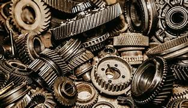
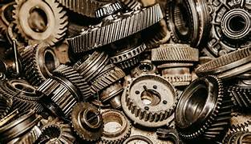

Compra de pequeñas y grandes cantidades de carton
Compramos chatarra industrial a grandes, medianas y pequeñas empresas industriales
Compramos chatarra Automotriz
Compramos a grandes y pequeñas cantidades baterias

Somos lideres de compra y venta de chatarra,
estamos para convertir tu chatarra y metales en una oportunidad
sostenible.
¡Únete a la revolución del reciclaje y maximiza el valor de tus materiales!
Con nosotros, no solo limpias tu espacio, sino que también contribuyes al
cuidado del medio ambiente.
Nos especializamos en la adquisición de una amplia variedad de materiales reciclables, ofreciendo a particulares y empresas industriales una solución fácil y eficaz para deshacerse de sus desechos.
Las baterÃas usadas deben ser recicladas para evitar contaminación y recuperar materiales valiosos.
Como el cobre y el aluminio, son muy valorados. Se utilizan en cables eléctricos, utensilios y componentes de automóviles..
Placas de circuitos y otros componentes pueden ser desmantelados para recuperar metales y plásticos.
Como tostadoras y licuadoras, que pueden ser reparados o desmantelados para recuperar materiales.
Como tostadoras y licuadoras, que pueden ser reparados o desmantelados para recuperar materiales de nuevos productos como herramientas y estructuras.
Partes de vehÃculos en desuso, como motores y carrocerÃas, pueden ser recicladas para recuperar metales y piezas útiles.


 

¡Compra de Chatarra en Todas las Localidades de Bogotá y Afueras!
Ofrecemos nuestro servicio de compra de chatarra electrónica y electrodomésticos,baterias,metales, plastico, carton,chatarra Automotriz en todas las localidades de Bogotá,
incluyendo La Candelaria, Chapinero, Santa Fe, San Cristóbal, Usme, Tunjuelito, Ciudad BolÃvar, Engativá, Suba, Barrios Unidos,
Teusaquillo, Fontibón, Kennedy, Bosa, y más. También extendemos nuestra oferta a empresas grandes en las afueras de la ciudad,
garantizando los mejores precios del mercado y un servicio rápido y eficiente. ¡Contáctanos y descubre cómo podemos ayudarte a
maximizar el valor de tu chatarra!
🔹 Ubicación Estratégica: Nos encontramos cerca de ti, listos para ofrecerte un servicio
rápido y eficiente.
🔹 Compromiso Ambiental: Contribuimos a un futuro sostenible al reciclar tus desechos y
reducir la huella de carbono.
Hemos estado trabajando en grandes empresas medianas, y llegando a todas las personas que han depositado la confianza en nosotros